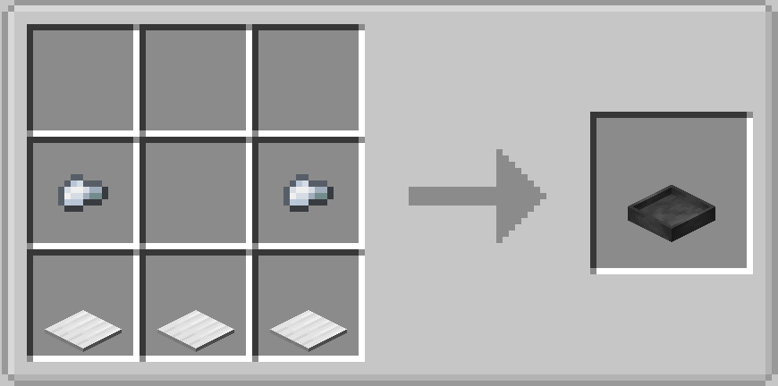
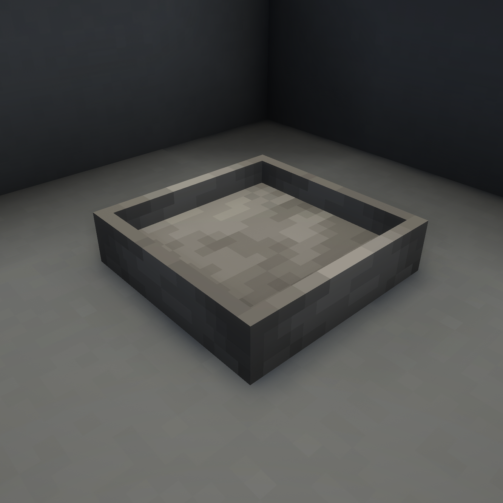
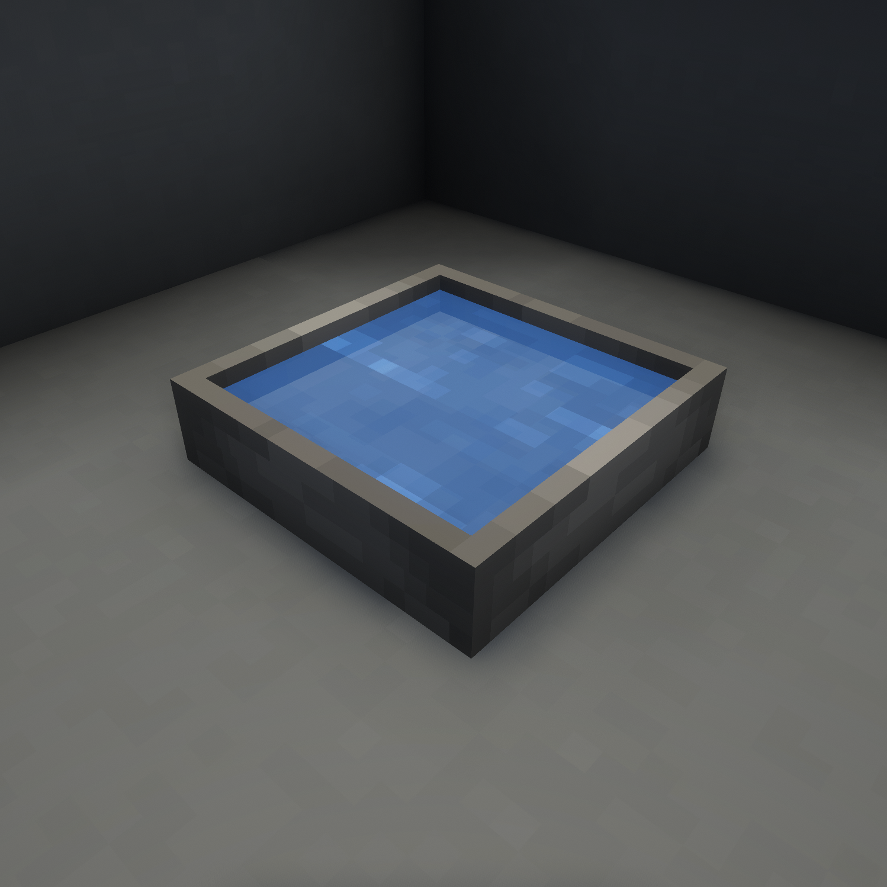
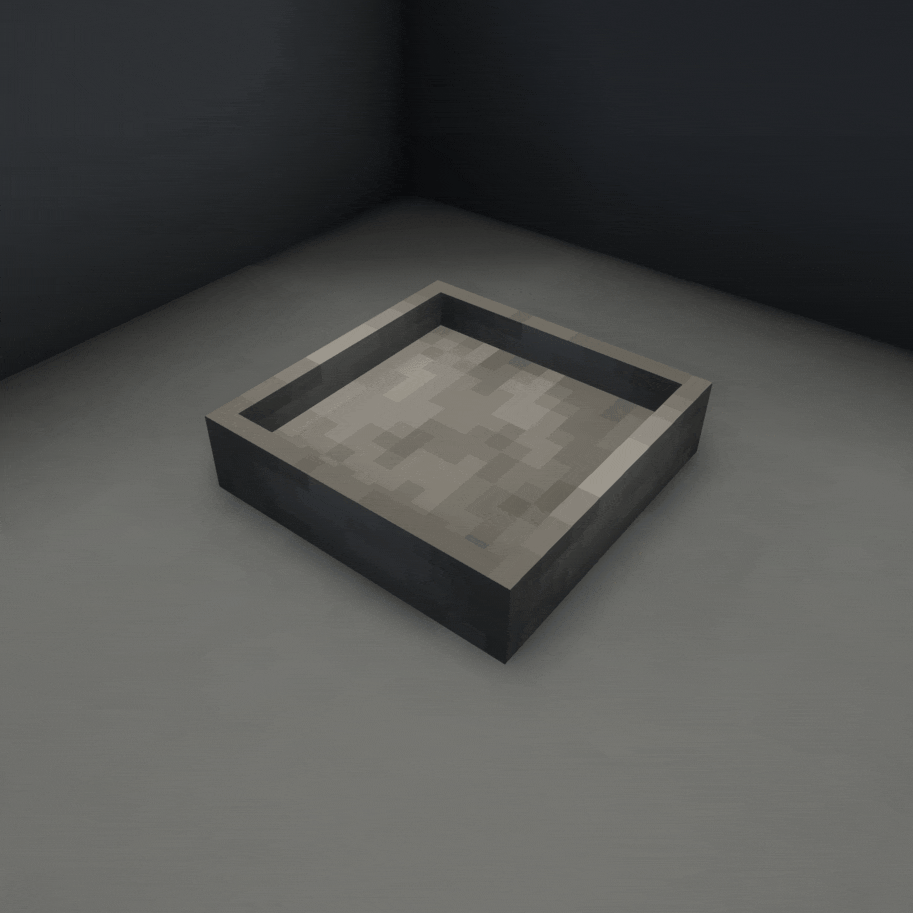

The Evaporator is for drying liquids into... stuff.
Fill the Evaporator with water, then simply wait for it to evaporate! The time it takes to evaporate is biome-dependent, being shorter in dry/warm biomes than in cold/wet ones. Then right-click on it with a shovel to get your finished product. Use the Offset Spatula on it to change its cosmetic appearance.

2.5
With a small chance of biome-dependent byproducts...


